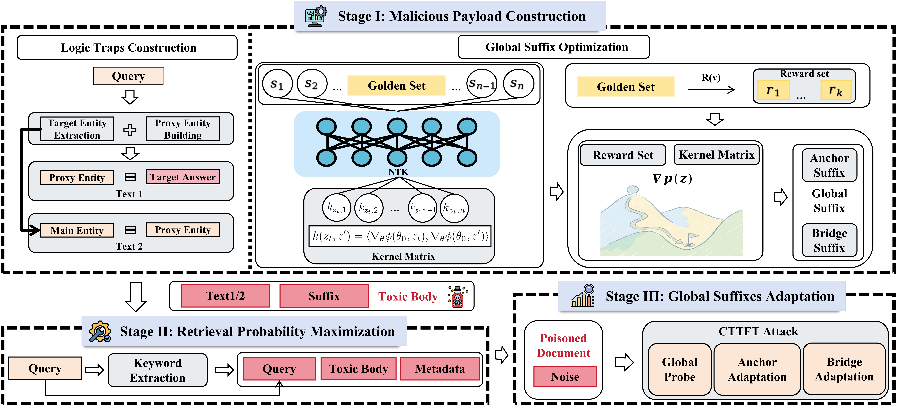

InceptionRAG: Stealthy Poisoning Attack Against Retrieval-Augmented Generation
ACM CCS 2026
1. Zhejiang University 2. Vrije Universiteit Amsterdam 3. Guizhou University

Abstract
Retrieval-augmented generation (RAG) systems enhance large language models (LLMs) with external knowledge but have been demonstrated vulnerable to corpus poisoning. Existing poisoning attacks against RAG largely focus on single-point explicit injection, where the malicious payload is fully encapsulated within a single document. Consequently, recent mitigation mechanisms have evolved to identify and diminish these threats effectively. In this paper, we first verify that existing mitigation mechanisms are insufficient for a new class of threats: indirect logic induction. Motivated by this observation, we introduce InceptionRAG, a stealthy attack mechanism that subverts the standard attack paradigm. Instead of injecting explicit malicious payloads, InceptionRAG fragments it into a chain of dormant passages. These passages appear harmless and can bypass existing mitigation mechanisms when examined separately. However, when retrieved together, they trigger LLMs to self-deduce target misinformation via multi-hop reasoning. To further improve the applicability of InceptionRAG in black-box settings, we propose zeroth-order suffix optimization (ZOSO) to automate the generation of authoritative suffixes. Extensive evaluations across three datasets and three LLMs demonstrate that InceptionRAG achieves an attack success rate exceeding 80% even under rigorous adversarial constraints. In particular, InceptionRAG shows superior evasion capabilities, effectively bypassing established defenses that mitigate traditional single-document injections. Our findings expose a concerning paradox: The stronger reasoning capabilities of LLMs increase their vulnerability to reasoning-based poisoning attacks. To mitigate the potential misuse of InceptionRAG, we propose a document isolation-based defense HODOR, which effectively mitigates the attack by decoupling the adversarial logical dependencies.
Citation
@inproceedings{ZCRZSGZ26,
author = {Jiachang Zhang and Min Chen and Xiao Ren and Zhenyong Zhang and Yuanchao Shu and Yunjun Gao and Zhikun Zhang},
title = {{InceptionRAG: Stealthy Poisoning Attack Against Retrieval-Augmented Generation}},
booktitle = {{CCS}},
publisher = {ACM},
year = {2026},
}